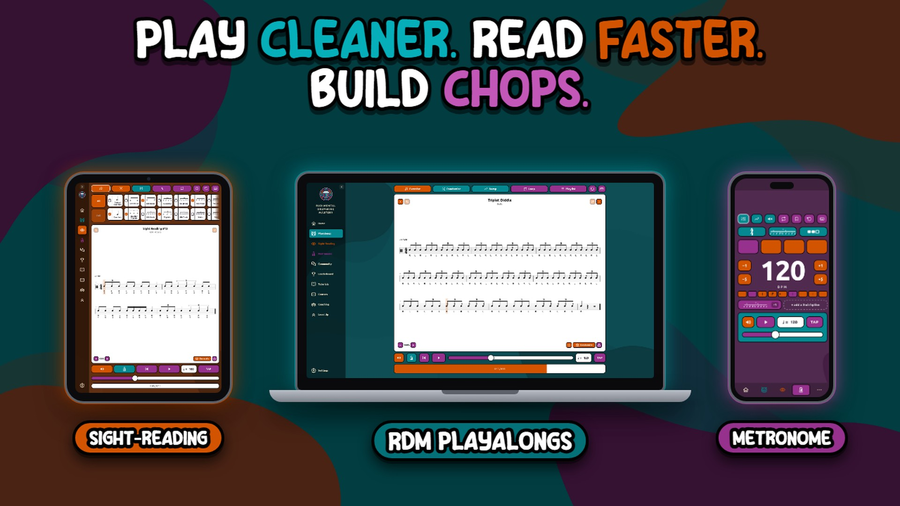
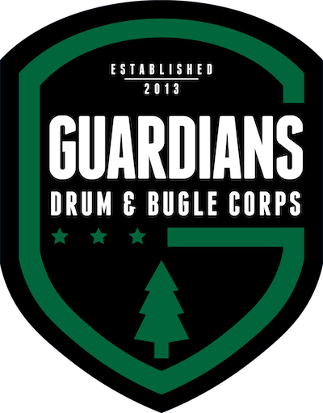
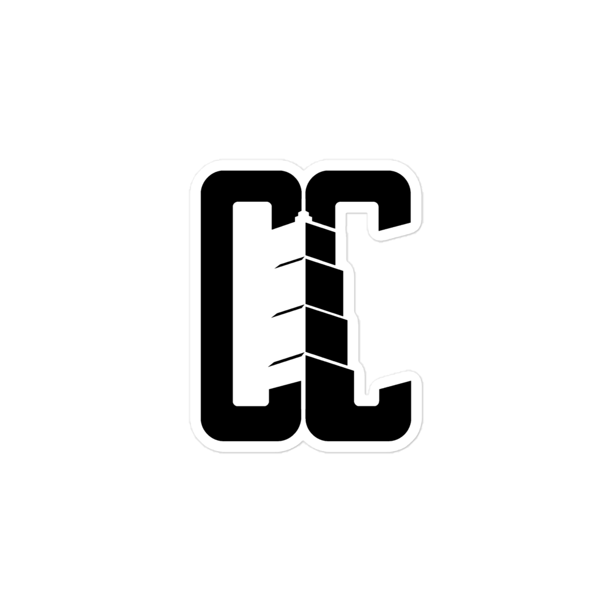
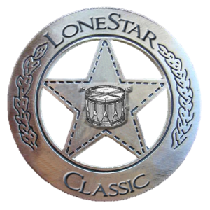
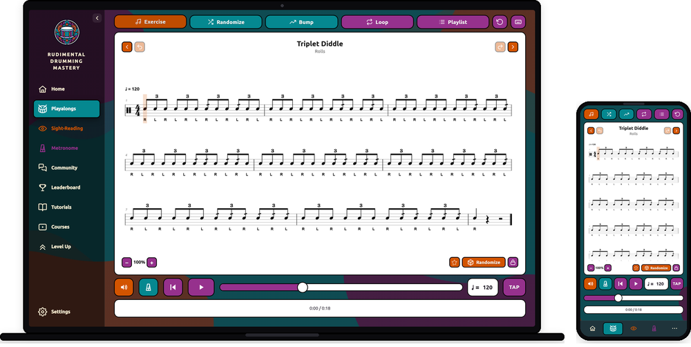
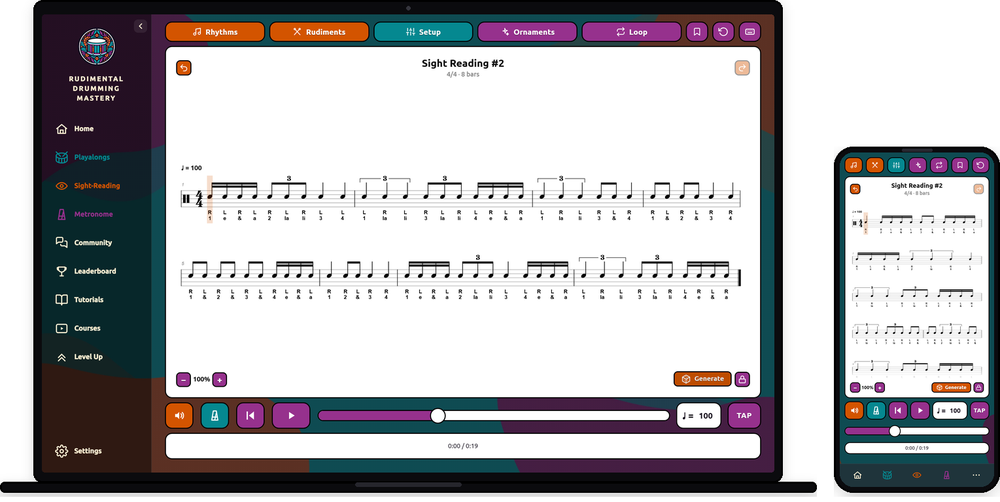
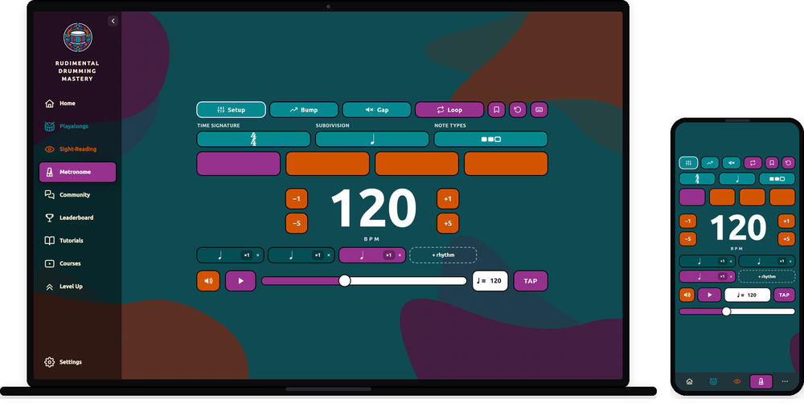
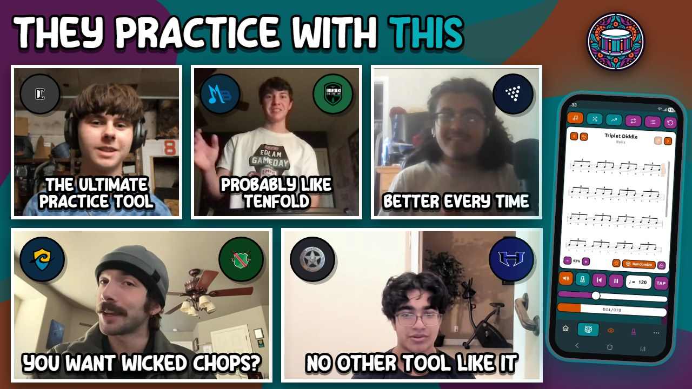

Get Clean Hands, Fast.
Practicing for hours and still not sure if you're clean? Play along with a perfect rep and hear every mistake the moment you make it.

or see all plans, from $6.58 a month ↓
- $1 for 7 full days
- Cancel anytime
- No contract, no catch
Drummers using the RDM Playalongs have made these lines



Use it and you'll get cleaner. No matter what.
Most practice tools just keep time. The RDM Playalongs exposes exactly where your playing is dirty so you can clean it. Better ears. Better chops. Better time. More music under your control.
Hear your own dirt
Train your ears to catch clean versus dirty. That one skill is what separates the drummers who make the line from the ones who get cut.
Build real speed
Bump Tempo and Tempo Randomization push your top end and lock in every tempo range, so fast passages and rhythm changes stop falling apart.
Never run out of reps
500+ looping exercises plus endless generated rhythm sight-reading. You always know exactly what to practice next.
Every level, every drummer
Beginner just picking up sticks or an advanced drummer chasing a world-class line. The tool meets you where you are and pulls you up.
Everything you need to get clean. In one place.
No more juggling a metronome app, random YouTube playalongs, and a stack of sheet music. The RDM Playalongs puts the three tools that actually build clean hands under one login.

The Playalongs Tool
500+ exercises that loop until your hands lock in
Press play and the exercise audio loops continuously at the tempo you set. Sheet music and audio side by side, so you see it and hear it at the same time.
- Categories, filters, and search to find any exercise fast
- Curated 30-minute playlists: warm-up, chop-building, conditioning
- Tempo randomization bounces the tempo inside a range so you learn to adapt
- Bump-tempo jumps faster every few reps to find your true top speed

The Sight-Reading Lab
Endless new sheet music, generated on demand
Hit generate and the lab builds a fresh page of rhythms every time. Dial in exactly how hard you want it, then read something you have never seen before.
- Adjustable tempo, rest density, and time signatures
- Stickings and counts shown under every rhythm
- An expansive rhythm bank with every rhythm you'll ever need
- The fastest way to change rhythmic speeds on the fly

The RDM Metronome
Built for rudimental drumming, not just keeping time
Tempo, sound, and time signature, plus the advanced subdivisions a normal metronome cannot touch. The tool you actually need in the practice room.
- Advanced marching subdivisions: 4-lets, 9-lets, 7-lets, ratio rhythms
- Accent or remove any beat, and any partial inside the beat
- Generate custom rhythms to lock in the exact pattern you're working
- Everything you wish your metronome did, in one place
"My timing has improved probably tenfold."
Hear what the RDM Playalongs did for their drumming.

"It trained my ears out of so many bad habits I had."
RDM Playalongs user"The tempo randomizer makes you adapt much quicker. It lets me jump between tempos so I actually know it, instead of just playing it at one tempo."
RDM Playalongs user"At the Guardians camp, I felt internal tempo more than I ever had before."
RDM student · Guardians camp"Before the Playalongs I didn't know what to practice. It really helped me find what to work on."
RDM Playalongs user"It's a permanent fix to the problem of 'am I going to sound good?'"
RDM Playalongs userA whole year costs less than two lessons.
All three tools, all 500+ exercises, every control unlocked.
Not ready yet? Start on the free version, no card needed.
Real talk: one private lesson costs $50. A whole year of this costs $79, for the tool that makes every rep count and gets your hands cleaner every single day.

Built by a working drummer, for serious ones.
I'm Anthony Steller, a gigging drummer, snare instructor, and the founder of RDM. I built the Playalongs because I kept watching the same thing happen to every dedicated drummer I coached: hours of practice, no real way to hear whether they were actually clean.
- 1st Chair, TMEA All-State Percussionist (1st in the state)
- 1st Place, Lone Star Drumline Solo Contest
- 1st Place, Plano Drumline Solo Contest
- 2nd Place, PASIC 2022 Snare Solo Contest
- Made the Troopers drumline, plus top spots to make SCV and Vigilantes
- Gigging musician for Dynamic Rhythm Entertainment: FC Dallas, the San Antonio Spurs, Texas Live, and the Cutting Edge Haunted House drumlines
This is the exact practice tool I put in front of my own students. It fills the silence a metronome leaves behind, so you finally hear every dirty note the moment you play it.
Drummers training in the RDM system have gone on to make World Class DCI and WGI drumlines.
The tool does the exposing. The reps are up to you.